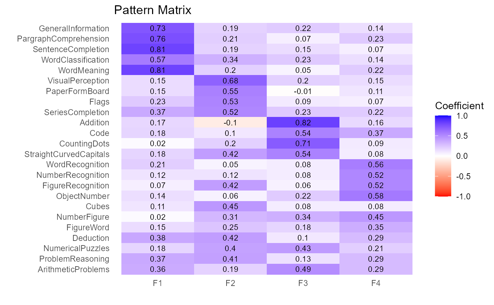
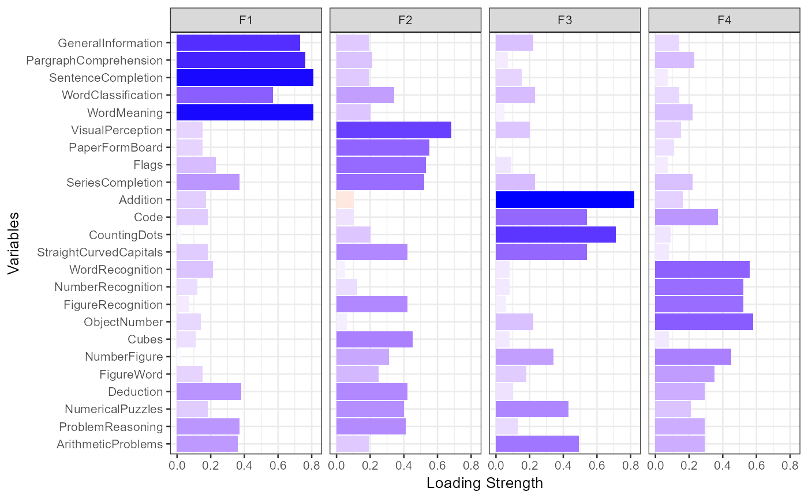

FA performs common factor analysis
FA(data, nfactors = NULL, rotate = "none", fm = "pa", digits = 2, ...)
| data | a data frame or correlation matrix. |
|---|---|
| nfactors | nuber of factors to extract. |
| rotate | factor rotation to perform. |
| fm | type of factor extraction. |
| digits | number of digits to retain. |
| ... | parameters passed to the |
returns a list with 5 components:
the call
factor pattern
variance accounted for
structure matrix
factor intercorrelations for oblique rotations
factor scores if factors are extracted from a data frame
The FA function is a wrapper for the psych:fa function.
Factor extractions include principal axis (pa) and maximum likelihood
(ml), among others. Factor rotations include none, varimax,
and promax.
PCA, plot.factorAnalysis, score, and scree_plot.
fit.fa <- FA(Harman74.cor$cov, nfactors=4, rotate="varimax")#> #> Principal Axis Factor Analysis #> Number of Factors: 4 / Rotation: varimax #> #> Factor Pattern #> F1 F2 F3 F4 h2 #> VisualPerception 0.15 0.68 0.20 0.15 0.55 #> Cubes 0.11 0.45 0.08 0.08 0.23 #> PaperFormBoard 0.15 0.55 -0.01 0.11 0.34 #> Flags 0.23 0.53 0.09 0.07 0.35 #> GeneralInformation 0.73 0.19 0.22 0.14 0.64 #> PargraphComprehension 0.76 0.21 0.07 0.23 0.68 #> SentenceCompletion 0.81 0.19 0.15 0.07 0.73 #> WordClassification 0.57 0.34 0.23 0.14 0.51 #> WordMeaning 0.81 0.20 0.05 0.22 0.74 #> Addition 0.17 -0.10 0.82 0.16 0.74 #> Code 0.18 0.10 0.54 0.37 0.47 #> CountingDots 0.02 0.20 0.71 0.09 0.55 #> StraightCurvedCapitals 0.18 0.42 0.54 0.08 0.51 #> WordRecognition 0.21 0.05 0.08 0.56 0.36 #> NumberRecognition 0.12 0.12 0.08 0.52 0.31 #> FigureRecognition 0.07 0.42 0.06 0.52 0.45 #> ObjectNumber 0.14 0.06 0.22 0.58 0.41 #> NumberFigure 0.02 0.31 0.34 0.45 0.41 #> FigureWord 0.15 0.25 0.18 0.35 0.23 #> Deduction 0.38 0.42 0.10 0.29 0.42 #> NumericalPuzzles 0.18 0.40 0.43 0.21 0.42 #> ProblemReasoning 0.37 0.41 0.13 0.29 0.40 #> SeriesCompletion 0.37 0.52 0.23 0.22 0.51 #> ArithmeticProblems 0.36 0.19 0.49 0.29 0.49 #> #> F1 F2 F3 F4 #> SS loadings 3.64 2.93 2.67 2.23 #> Proportion Var 0.15 0.12 0.11 0.09 #> Cumulative Var 0.15 0.27 0.38 0.48 #> Proportion Explained 0.32 0.26 0.23 0.19 #> Cumulative Proportion 0.32 0.57 0.81 1.00